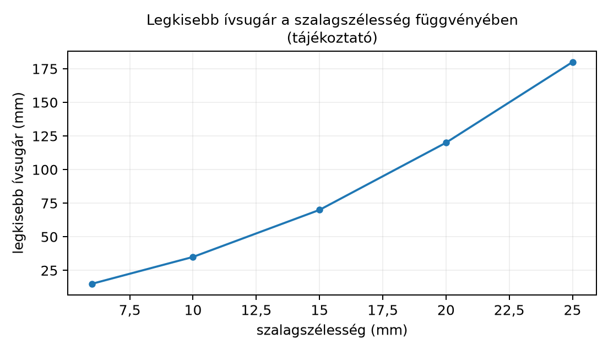
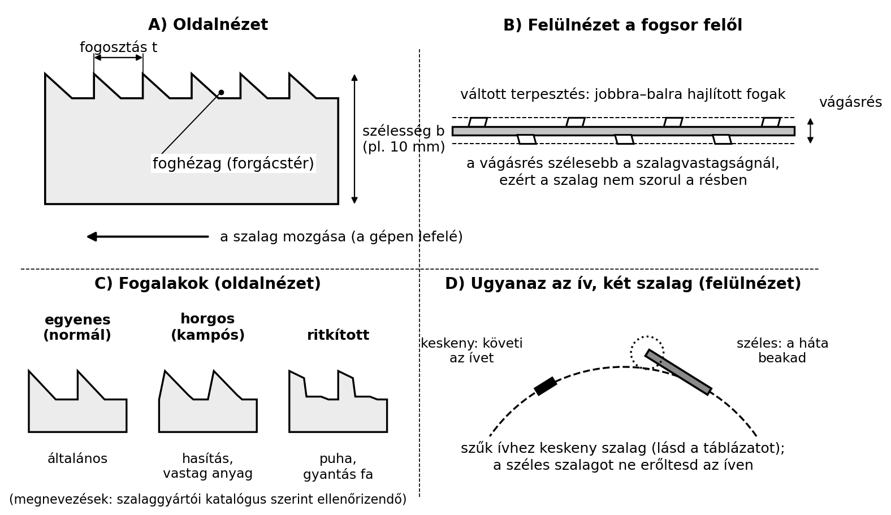
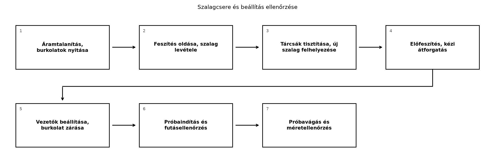

A szalagfűrészgép az asztalosműhely egyik legsokoldalúbb gépe. Hasít, darabol, de fő értéke, hogy íves alkatrészeket tudunk vele kivágni. Gondolj egy ívelt széklábra, egy hullámos polctartóra vagy egy sablon szerint készülő karfára. Körfűrésszel csak egyenes vonal mentén vágunk; a szalagfűrész viszont folyamatosan, keskeny acélszalaggal vág, ezért az ív követésére is alkalmas.
Képzelj el egy kétkerekű, álló kerékpárt, amelynek felnijeire egy keskeny, fogazott acélszalag van felfűzve. A két kerék a szalagtárcsa. A felső tárcsa emelhető, süllyeszthető és enyhén dönthető, így a szalag megfeszíthető és futása középre állítható. A munkadarabot egy kis asztalon toljuk neki a lefelé mozgó, fogazott szalagnak. A szalag csak a vágási zónában szabad; a többi részét acéllemez burkolat takarja. A vágás közben keletkező fűrészport elszívócső vezeti el.
A gépen a szalag szélességét az ívsugárhoz választjuk. Az alábbi ábra azt mutatja, hogyan nő a legkisebb vágható ívsugár a szalagszélesség növelésével:

A görbe nem pontos mérési adat, hanem szemléltető összefüggés: szélesebb szalaggal nagyobb ívsugarat tudunk vágni.
Definíció. Az asztalos szalagfűrészgép olyan faipari forgácsoló gép, amelynek szerszáma két tárcsán végtelenítve futó, fogazott acélszalag. A szalag vágóirányban lefelé mozog, a munkadarabot kézi előtolással, asztalon tolva, szabadon vagy ütköző, illetve sablon vezetésével vágjuk.
A gép fő részei:
A rajz a gépet a kezelő felől mutatja, a burkolatokat szaggatott vonallal „átlátszónak” rajzolva: felül a feszítőorsóval emelhető és a döntőcsavarral dönthető felső tárcsa, alul a motorral hajtott alsó tárcsa. A szalag a vágási zónában lefelé fut; ott a felső vezető (állítható oszlopon, a munkadarab fölött) és az asztal alatti alsó vezető tartja. Az interaktív változatban a részekre mutatva a nevük és feladatuk jelenik meg, a burkolat zárt és nyitott nézete között pedig váltani lehet.
A fűrészszalag adatai: szélesség, vastagság, fogosztás és fogalak.
Definíció. A fogosztás a két egymás melletti fog azonos pontja közötti távolság, milliméterben kifejezve. Minél nagyobb a fogosztás, annál durvább, gyorsabb vágást kapunk; minél kisebb, annál finomabb a vágási felület, de lassabb az előtolás.
Fogalakok. - Egyenes (normál) fog: általános célú, hossz- és keresztirányú vágáshoz is. - Horgos (kampós, pozitív homlokszögű) fog: hasításhoz, vastag anyaghoz. - Ritkított fog: puha, gyantás fához, nagy forgácshellyel. - A fogak terpesztése lehet váltott vagy hullámos (vékony szalagnál); ez a vágási rés szélességét adja, nem a fogosztást (ellenőrizendő: szalaggyártói katalógus).
A szalag vastagsága a tárcsaátmérőtől függ. Keskenyebb tárcsán vékonyabb szalagot használunk, mert a vastag szalag a kis átmérőn hajlítva hamar kifárad, reped. A megengedett szalagvastagságot a szalaggyártó táblázata adja meg a tárcsaátmérőhöz; ezt mindig a gépkönyvvel és a gyártói adatlappal együtt ellenőrizd (ellenőrizendő: gépkönyv, szalagkatalógus).
Tájékoztató asztalosipari értékek:
| Szalagszélesség (mm) | Legkisebb ívsugár (mm, tájékoztató) | Jellemző használat |
|---|---|---|
| 6 | 15 | nagyon szűk ív, vékony anyag |
| 10 | 35 | íves székalkatrész, sablonos vágás |
| 15 | 70 | közepes ív, vastagabb anyag |
| 20 | 120 | enyhe ív, hasítás, darabolás |
| 25 | 180 | egyenes hasítás, vastag anyag, enyhe ív |
Szabály. A szalag szélességét a legkisebb vágandó ívsugár alapján válasszuk. A kiválasztott szalaggal a tervezettnél szűkebb ívet ne erőltessünk: a szalag beszorul, eltörik vagy a vágás szakadozik.

Az ábrán a fogosztás a két szomszédos fogcsúcs távolsága; a felváltva jobbra–balra hajlított (terpesztett) fogak a szalagvastagságnál szélesebb vágásrést nyitnak, ezért a szalag nem szorul. A „D” rész azt mutatja, hogy ugyanazon az íven a keskeny szalag követi a vonalat, a széles szalag háta viszont a vágásrés falának feszül. A fogalakok megnevezése a szalaggyártói katalógus szerint ellenőrizendő.
A szalagcsere és beállítás áramtalanítás után, a gép teljes megállását követően végezhető. A lépések:
A folyamat ábrája:

Szabály. A felső szalagvezető magasságát mindig a munkadarab vastagsága fölé, a lehető legközelebb állítsd. Tájékoztató érték: legfeljebb 5 mm-rel a munkadarab felett (ellenőrizendő: gépkönyv, szabvány), így a szalag szabad szakasza minimális marad.
A felső sorban (HELYES) a vezető és a szalagvédő közvetlenül a munkadarab fölött áll, a kezek a vágásvonal mellett, oldalt tolják a darabot, rövid darabnál tolófa dolgozik. Az alsó sorban (HIBÁS) a vezető magasan áll, a szalag hosszú szakaszon szabadon fut, és a hüvelykujj a vágásvonal meghosszabbításában, a szalag előtti veszélyzónában tol. A jobb oldali részlet a felső vezetőt felülről mutatja: két oldalvezető a fogtő mögött és a hátsó támasztógörgő a szalaghát mögött.
A szalagfűrészgépen két alapművelet jellemző: az egyenes hasítás/darabolás és az íves vágás.
Egyenes vágás ütközővel. 1. Állítsd be az ütközőt a kívánt méretre. 2. Ellenőrizd, hogy az ütköző párhuzamos a szalag vágási irányával. 3. Indítsd a gépet, várd meg, amíg a szalag felveszi a teljes fordulatszámot. 4. Told a munkadarabot egyenletes, lassú előtolással az ütközőhöz. 5. A darabot ne nyomd oldalra a szalag ellen, mert a szalag kitér és a vágás hullámos lesz. 6. Használj tolófát, ha a kéz a szalagtól 30 cm-nél közelebb kerülne. 7. A vágás végén engedd el a darabot, ne húzd vissza a szalagból.
Íves vágás sablon szerint. 1. Készíts sablont rétegelt lemezből vagy MDF-ből, a kívánt ívvel. 2. Rögzítsd a sablont a munkadarabon csavarokkal vagy szorítóval úgy, hogy a csavarhely a későbbi hulladékrészre essen. 3. Válassz az ívsugárhoz illő szalagszélességet a táblázat alapján. 4. Ha a darab nagyon szűk ívet tartalmaz, készíts előzetes könnyítő bevágásokat: a rajzvonalig merőleges bevágásokkal darabold fel a felesleges részt, hogy a fűrészszalag ne szoruljon be. 5. Vezess a sablon mentén, egyenletes előtolással. 6. A vágásvonalon hagyj 1–2 mm ráhagyást, amit később csiszolással, gyalulással vagy marással munkálsz meg. 7. Szűk ívnél ne erőltesd: ha a szalag csikorog, füstöl vagy a darab megszorul, állj le, ellenőrizd a szalagot és az ívsugarat.
Gépbiztonság. A művelet betanított, felügyelt tanulónak szól; védőberendezés nélkül, egyedül, fáradtan ne végezd. A szalagfűrészgép védőberendezései: zárt szalagburkolat, vágási zóna feletti állítható védő, feszítő- és futásbeállító szerkezet, vészleállító, fék, elszívócsatlakozó. Egyéni védőeszközök: védőszemüveg, hallásvédelem, fapor ellen légzésvédő maszk (FFP2 vagy magasabb osztály, keményfa-porhoz), szoros ruházat, hajháló. Tilos kesztyűt viselni a szalag közelében: a kesztyű beakadhat, és a kezet a szalagba rántja. Tilos a védőburkolat vagy a szalagvezető eltávolítása, a gép felügyelet nélküli működtetése, fémmel, szeggel, csavarral teli fa vágása, a szalag kézzel történő megállítása.
Szalaghossz meghatározása (egyforma tárcsaátmérő esetén, az Géptani alapfogalmak: hajtások, áttétel, fűrészszalag hossza alfejezet jelöléseivel):
ahol a tengelytávolság, a tárcsaátmérő.
Példa. Egy szalagfűrészgép tárcsaátmérője , a tengelytávolság . A szükséges szalaghossz:
A pontos méretet a gyártói katalógusból kell kiválasztani, a feszítési tartomány figyelembevételével.
Forgácsolási sebesség számítása. A szalag forgácsolási sebessége a szalagtárcsa kerületi sebessége. Ha a szalag a tárcsán nem csúszik meg, akkor:
ahol a szalagtárcsa átmérője mm-ben, a szalagtárcsa fordulatszáma 1/min, az eredmény m/s-ban adódik.
A szalagtárcsa fordulatszámát az ékszíjáttételből kapjuk: , ahol a motor ékszíjtárcsájának, a szalagtárcsa tengelyén ülő hajtott ékszíjtárcsának az átmérője. Ez különbözik a szalagtárcsa átmérőjétől.
Számítás. Motorfordulatszám , a motor ékszíjtárcsájának átmérője , a hajtott ékszíjtárcsa átmérője , a szalagtárcsa átmérője is . A szalagtárcsa fordulatszáma:
A forgácsolási sebesség:
Ellenőrzés: a szalagfűrészgépek jellemző szalagsebessége fánál 15–30 m/s tartományban van, ezért a 21,1 m/s reális (ellenőrizendő: gépkönyv, szalaggyártói adatlap).
Cél: ívelt székláb elővágása 20 mm vastag bükkfa alapanyagból, 35 mm legkisebb ívsugárral, utólagos maráshoz 2 mm ráhagyással.
Anyag: bükkfa (kemény lombos; fapor veszélye miatt elszívás és légzésvédelem kötelező), sablonhoz MDF 12 mm.
Gépek és szerszámok: asztalos szalagfűrészgép, 10 mm széles normál (egyenes) fogú szalag, fogosztás 6 mm (tájékoztató), sablon, szorítók, tolófa, mérőszalag, derékszög, rajzceruza.
Gépbiztonság. A művelet betanított, felügyelt tanulónak szól; védőberendezés nélkül, egyedül, fáradtan ne végezd. Ellenőrizd a zárt szalagburkolatot, felső szalagvezetőt, féket, vészleállítót, elszívást. Védőszemüveg, hallásvédelem, FFP2 porálarc, szoros ruházat, hajháló; kesztyű tilos. Indítás előtt: szalag feszessége, vezetők hézaga, a szalag fogainak sérülése, a tárcsa szabad futása, a munkaterület tisztasága, a darabon szeg, repedés, laza göcs nincs-e.
Lépések. 1. Készítsd el a székláb ívelt rajzát 1:1 méretben; jellemző legkisebb ívsugár 35 mm. – ellenőrzés: ívsugár mérése sablonnal, legalább 35 mm legyen. 2. Másold át a sablonra, vágd ki a sablont, és csiszold a rajzvonalig. – ellenőrzés: a sablonél sima, folytonos, méretpontos. 3. Rögzítsd a sablont a 20 mm vastag bükkdarabra szorítókkal; a szorítók ne lógjanak a vágási zónába. – ellenőrzés: a sablon nem mozdul el. 4. Durva kivágás: a felesleges anyagot 15–20 mm-enként, a rajzvonalra merőleges könnyítő bevágásokkal darabold fel. – ellenőrzés: a bevágások a rajzvonaltól 1–2 mm-re állnak meg. 5. Vágd körbe az ívet a sablon mentén, egyenletes előtolással. A vágásvonalon hagyj 1–2 mm ráhagyást. – ellenőrzés: a vágásvonal mindenütt a sablonon kívül, egyenletes. 6. A vágás után ellenőrizd a méreteket: hossz, szélesség, ívmenet; a ráhagyás legalább 1 mm legyen. – ellenőrzés: mérőszalaggal, tolómérővel, sablonnal. 7. Tisztítsd meg a gépet, kapcsold ki az elszívást, áramtalaníts.
A szalagfűrészelt alkatrészeket a következők szerint ellenőrizzük:
Eltérésnél: tompa szalag cseréje, rossz fogosztású szalag cseréje, a feszítés és a vezetők újraállítása, a sablon javítása.
A szalag elszakad. Ok: túlfeszített szalag, túl kicsi tárcsa a szalagvastagsághoz, hibás szalagillesztés, tompa fog, fémtárgy (szeg, csavar) a fában. Helyes gyakorlat: gyártói feszítési érték betartása, szalagvastagság-táblázat ellenőrzése, fémmentes anyag, rendszeres él-ellenőrzés.
A szalag a tárcsán előre vagy hátra fut el. Ok: rossz felsőtárcsa-döntés, kopott tárcsabevonat, rossz feszítés, sérült vezető, egyenetlen fog. Helyes gyakorlat: futásbeállítás a tárcsa döntésével, a bevonat tisztítása/cseréje, vezetők beállítása.
A vágott felület megég, a szalag beszorul. Ok: tompa fog, túl nagy előtolás, túl kicsi fogosztás a vastag anyaghoz, gyantás felület. Helyes gyakorlat: éles szalag, megfelelő fogosztás, kisebb előtolás, gyantamentesítés.
A vágás nem követi a sablont, az ív pontatlan. Ok: túl széles szalag a kívánt ívsugárhoz, a sablon nem rögzített, az előtolás erőltetett. Helyes gyakorlat: a táblázat szerinti szalagszélesség, stabil sablonrögzítés, egyenletes előtolás.
Egy asztalosműhelyben tömör tölgyből készítettek hajlított ívű támlákat székekhez. A tanuló 15 mm széles szalagot használt 25 mm-es ívsugárhoz, mert éppen az volt a gépben. A vágás során a szalag beszorult, a darab megrándult, a szalag a tárcsán megcsúszott, és a vágásvonal széles, szakadozott lett. A műhelyvezető leállította a gépet. Megvizsgálták a szalagot: nem volt sérült, de a szalagszélesség nem felelt meg az ívsugárnak. Kicserélték 6 mm-es szalagra, a sablont szorítókkal rögzítették, és a felesleges részt könnyítő bevágásokkal kivágták. A vágás után 2 mm ráhagyás maradt, amit felsőmaróval, sablonvezető gyűrűvel munkáltak pontosan. Tanulság: a szalagszélességet az ívsugárhoz kell választani, és a sablonos vágásnál a ráhagyásos elővágás biztonságosabb.
1. feladat (A). Határozd meg a fogosztás fogalmát, és sorolj fel legalább három fogalakot.
2. feladat (A). Egy szalagfűrészgép tárcsaátmérője 600 mm, tengelytávolsága 1500 mm. Számítsd ki a szükséges szalaghosszt.
3. feladat (B). A motor fordulatszáma 2880 1/min, a motor ékszíjtárcsája 120 mm, a hajtott ékszíjtárcsa 480 mm, a szalagtárcsa átmérője 500 mm. Számítsd ki a szalagtárcsa fordulatszámát és a forgácsolási sebességet.
4. feladat (B). Válassz szalagszélességet 25 mm-es legkisebb ívsugárhoz a tájékoztató táblázat alapján, és indokold a választásod.
5. feladat (C). A vágott felület folyamatosan megég, és a szalag beszorul. Sorold fel a lehetséges okokat, és írd le, milyen sorrendben vizsgálnád őket.
6. feladat (D). Készíts egy rövid technológiai tervet egy 400 mm × 200 mm-es, 30 mm vastag bükk lapból kivágandó, 50 mm-es belső ívsugarú ovális asztali tálca elővágásához. Add meg a szükséges szalagot, a sablon készítését, a vágási lépéseket, az ellenőrzéseket és a biztonsági teendőket.
1. feladat (A). A fogosztás a két egymás melletti fog azonos pontja közötti távolság milliméterben. Fogalak: egyenes (normál), horgos (kampós), ritkított; a terpesztés váltott vagy hullámos. A fogosztás nagyobb értéke gyorsabb, durvább vágást, kisebb értéke finomabb felületet ad.
2. feladat (A). Adott: , . Keresett: .
3. feladat (B). Adott: , , , . Keresett: , .
Ellenőrzés: a faipari szalagsebesség 15–30 m/s tartományban van, az eredmény reális.
4. feladat (B). A táblázat szerint a 10 mm-es szalag legkisebb ívsugara 35 mm, ez nagyobb a szükséges 25 mm-nél, ezért nem alkalmas. A 6 mm-es szalag legkisebb ívsugara 15 mm < 25 mm, tehát ezt választjuk. Szabály: a legkisebb vágandó ívsugárnál kisebb vagy egyenlő legkisebb ívsugarú szalagok közül a legszélesebbet válaszd. A 15 mm-es szalag legkisebb ívsugara 70 mm, az sem lenne alkalmas.
5. feladat (C). Tünet: égés, beszorulás. Lehetséges okok és vizsgálati sorrend: 1. Tompa szalag: vizsgáld meg a fogakat; ha fényes, kopott él, cseréld. 2. Rossz fogosztás: túl kicsi fogosztás a vastag anyaghoz; ellenőrizd a gyártói ajánlást, válassz nagyobbat. 3. Túl nagy előtolás: csökkentsd az előtolást. 4. Gyantás felület: gyantamentesítés vagy más szalag alkalmazása. 5. Szalag beszorul az ívben: ellenőrizd az ívsugarat a szalagszélességhez; válassz keskenyebb szalagot, vagy készíts könnyítő bevágásokat.
6. feladat (D). Technológiai terv az ovális tálca elővágásához: - Anyag: bükk, 400 × 200 × 30 mm; sablonhoz MDF 15 mm. - Szalag: 10 mm széles normál (egyenes) fogú, fogosztás 6 mm (tájékoztató), mert a legkisebb ívsugár 50 mm, ami a táblázat szerint 10 mm szalaghoz illik (35 mm minimális ívsugár). - Sablon: rajzold meg az oválist, vágd ki, csiszold pontosra; rögzítsd a munkadarabra. - Előkészítés: a felesleges sarkokat könnyítő bevágásokkal távolítsd el a rajzvonaltól 1–2 mm-re. - Vágás: sablon vezetésével, a vonalon kívül 1–2 mm ráhagyással, egyenletes előtolással. - Ellenőrzés: méret, ív folytonossága, vágási felület, merőlegesség. - Biztonság: áramtalanítás utáni beállítás, védőszemüveg, hallásvédelem, FFP2 porálarc, kesztyű tilos, a felső vezető a darab fölött legfeljebb 5 mm-re. Indítás előtt ellenőrizd a szalag feszességét, fogépségét, a burkolatokat, az elszívást.
A szalagfűrészgép a faipari íves vágás alapgépe. A végtelenített, fogazott acélszalag két szalagtárcsán fut; a felső tárcsa feszíti és dönti a szalagot, a szalagvezetők a vágási zónában megtámasztják, a burkolat és a fék a biztonságot szolgálja. A szalag jellemzői: szélesség, vastagság, fogosztás, fogalak. A szalag szélességét a legkisebb ívsugárhoz kell választani: keskenyebb szalag szűkebb ívet vág, szélesebb szalag egyenes vágáshoz jobb. A szalagcserét áramtalanítás után, a gépkönyv szerint végezzük; a feszítés és a futás ellenőrzése kézi átforgatással és próbaindítással történik. A felső vezetőt a munkadarab vastagságához közel kell állítani. A gép biztonságos kezeléséhez védőszemüveg, hallásvédelem, fapor elleni maszk szükséges; kesztyű tilos. A szalaghossz egyforma tárcsáknál , a forgácsolási sebesség . Továbbvitt eredmény. A szalagfűrészelés íves alkatrészek és sablonok készítésének alapja; ezt használjuk fel a Fűrészgépi gyakorlat: darabolás, szélezés, szeletelés, hibakiejtés, íves alkatrészek és az Ülőbútorok gyártása: íves alkatrészek, sablonok, csapozás alfejezetekben.